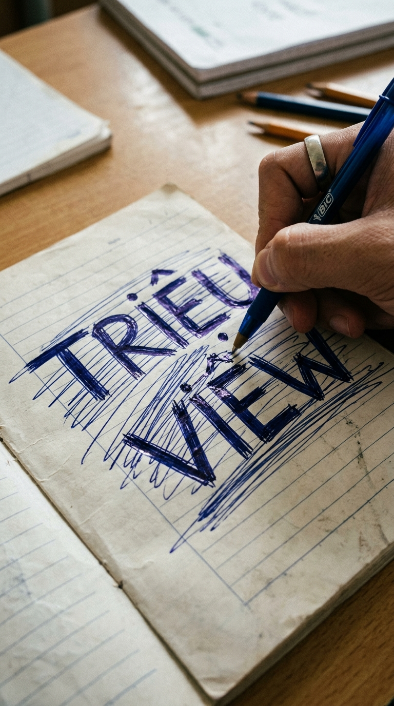
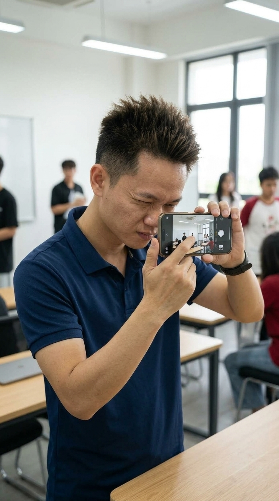
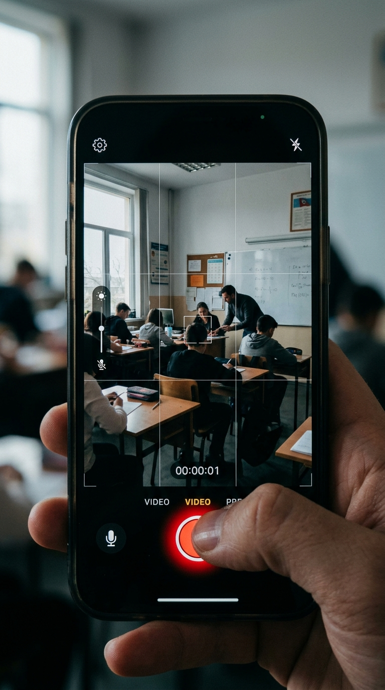
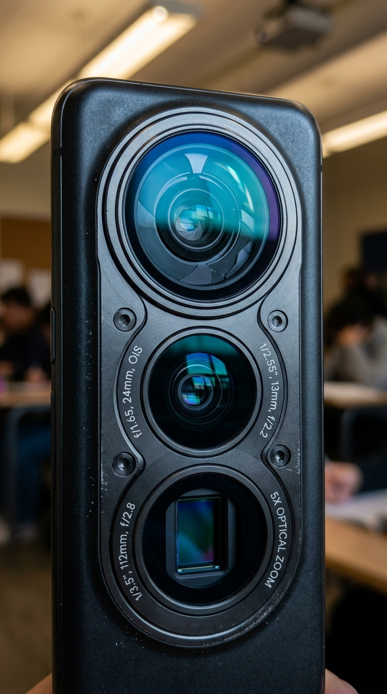

BĂM NHỎ 1 CẢNH TRÁM BÌNH THƯỜNG THÀNH 3–5 CÚ MÁY THỰC CHIẾN
Trong video marketing thực chiến, căn bệnh phổ biến nhất là "cảnh trám chết dí": đặt máy một góc quay bạn học cắm cúi gõ laptop suốt 10 giây. Khung hình phẳng lì, nhịp phim lờ đờ, đến chính mình xem lại còn muốn lướt thì trách gì khán giả!
Tại bài tập này, sinh viên khóa 1 hành động gốc và băm thành 5 cú máy ngắn (2.0s – 2.5s), bắt buộc thay đổi đồng thời cả 3 trục: Cỡ cảnh 🔄 Góc máy 🔄 Hướng máy, khớp đúng nhịp thở của kịch bản nói bên dưới.
📌 4 CHỦ ĐỀ BÀI TẬP THỰC HÀNH TẠI LỚP (CHỌN ĐỂ XEM CHI TIẾT)
Bấm vào card để chuyển nhanh kịch bản phân cảnh
 BÀI TẬP 01
Đồ âu may đo (Smart suit)
BÀI TẬP 01
Đồ âu may đo (Smart suit)
Soi chỉ số ads & Cày bài tập trên laptop
"Đứng một chỗ bấm máy thì nhàn thật... ... ...thì đến mình xem lại còn lướt vội, trách gì người ta! 😄"
🎭 Tầng 2.5: Cái cớ giữ thể diện: thà chịu khung hình chết dí còn hơn bị chê làm màu.
Xem 5 Phân Cảnh Bài 01 ➔
 BÀI TẬP 02
Áo phông cộc tay đen + Quần bò (Casual t-shirt)
BÀI TẬP 02
Áo phông cộc tay đen + Quần bò (Casual t-shirt)
Cuốn sổ tay & Kịch bản gạch xóa nát bét
"Cố rặn từng chữ cho nó kêu... ... ...hóa ra cầm bút mới biết mình nhiễm văn mẫu nặng quá rồi! 😄"
🎭 Tầng 2.5: Cái cớ giữ thể diện: gạch xóa để che đậy sự lúng túng khi gồng chữ giả tạo.
Xem 5 Phân Cảnh Bài 02 ➔
 BÀI TẬP 03
Đồ thể thao polo năng động (Sporty polo)
BÀI TẬP 03
Đồ thể thao polo năng động (Sporty polo)
Cầm điện thoại test góc quay tại bàn
"Bảo giơ máy lên quay thì ai cũng ngại... ... ...thôi bấm đại một đúp đi, xấu thì xóa, ngại gì vết bẩn! 😄"
🎭 Tầng 2.5: Cái cớ giữ thể diện: diễn vai sành đồ nghề soi app để che đậy nỗi sợ bấm máy.
Xem 5 Phân Cảnh Bài 03 ➔
 BÀI TẬP 04
Sơ mi xanh dài tay xắn gấu cao (Smart casual shirt)
BÀI TẬP 04
Sơ mi xanh dài tay xắn gấu cao (Smart casual shirt)
Ngẩng nhìn slide giảng bài & Giật mình
"Ngồi dưới lớp lướt máy, bụng bảo dạ mấy trò này mình biết thừa... ... Thôi cất máy, ghi vội lại... không mai về lại đâu vào đấy! 😄"
🎭 Tầng 2.5: Cái cớ giữ thể diện: diễn kịch sành sỏi đến khi bị đánh trúng điểm yếu.
Xem 5 Phân Cảnh Bài 04 ➔
BÀI TẬP 01 • LỜI THOẠI DUY NHẤT CHUẨN ÔNG GIÁO:
Đứng một chỗ bấm máy thì nhàn thật...
nhưng lười dịch cái chân, để khung hình đơ ra...
...thì đến mình xem lại còn lướt vội, trách gì người ta! 😄
nhưng lười dịch cái chân, để khung hình đơ ra...
...thì đến mình xem lại còn lướt vội, trách gì người ta! 😄
💡 BẢN ĐỒ 4 TẦNG SỰ THẬT • BÀI TẬP 01: SOI CHỈ SỐ ADS & CÀY BÀI TẬP TRÊN LAPTOP
Đồ âu may đo (Smart suit)
❌ Tầng 1 • Nói đãi bôi (Văn mẫu an toàn)
Em đi học quay dựng là để làm video triệu view,
phải dùng kỹ thuật điện ảnh cao siêu người ta mới xem.
phải dùng kỹ thuật điện ảnh cao siêu người ta mới xem.
👉 Lời nói đãi bôi bề nổi, nghe cho sang miệng chứ rỗng tuếch.
⚠️ Tầng 2 • Cảm giác thật (Thao tác lúng túng)
Cầm máy quay bạn học thì chân chôn chặt một chỗ,
bấm đại mười giây cho xong bài rồi về ghép nhạc đè lên.
bấm đại mười giây cho xong bài rồi về ghép nhạc đè lên.
👉 Thao tác thực tế tại lớp: lười đổi góc, quay một đúp tĩnh lấy lệ.
🎭 Tầng 2.5 • Vị thế & Thể diện (Điểm nghẽn cốt tử)
Biết thừa khung hình đang đơ, xem lại nhạt toẹt...
nhưng ngại cúi thấp hay kiễng chân, sợ người ta bảo làm màu.
Thôi thì cứ đứng yên bấm một góc tĩnh cho nó an toàn!
nhưng ngại cúi thấp hay kiễng chân, sợ người ta bảo làm màu.
Thôi thì cứ đứng yên bấm một góc tĩnh cho nó an toàn!
👉 Cái cớ giữ thể diện: thà chịu khung hình chết dí còn hơn bị chê làm màu.
🔥 Tầng 3 • Sự thật ngượng miệng (Tim đen bóc trần)
Lười dịch cái chân thì khung hình chết dí.
Đến chính mình xem lại còn muốn lướt qua cho nhanh,
thì đăng lên mạng làm sao giữ chân được người xem!
Đến chính mình xem lại còn muốn lướt qua cho nhanh,
thì đăng lên mạng làm sao giữ chân được người xem!
👉 Sự thật ngượng miệng: cái video mình còn chán ngấy thì ai dừng lại xem.
🎬 CHI TIẾT 5 CÚ MÁY BĂM NHỎ (BÀI TẬP 01)
5 ảnh phân cảnh 9:16 riêng biệt • Nhấp vào ảnh để xem chi tiết
 Trung cận (MCU)
00:00 - 02.5s
Trung cận (MCU)
00:00 - 02.5s
1. Thiết lập áp lực bài tập
🎙️ "Đứng một chỗ bấm máy thì nhàn thật..."
| Cỡ cảnh | Trung cận (MCU) |
| Góc máy | Ngang tầm mắt (0°) |
| Hướng | Chếch 45° bên hông trái |
💡 Mẹo Ông Giáo: Ngồi ké bên cạnh bàn, đưa máy ngang tầm mắt cách một sải tay. Khóa nét tròng kính, lấy ánh sáng xanh màn hình hắt nhẹ lên mặt.
 Cận cảnh (CU)
02.5s - 04.5s
Cận cảnh (CU)
02.5s - 04.5s
2. Ánh mắt nhíu mày sốt ruột
🎙️ "...bấm một cái là xong."
| Cỡ cảnh | Cận cảnh (CU) |
| Góc máy | Hất nhẹ 15° từ dưới lên |
| Hướng | Chính diện xuyên mép laptop |
💡 Mẹo Ông Giáo: Bước sang đối diện, hạ máy ngang mép trên màn hình laptop. Canh đúng lúc bạn nhíu mày nhìn số liệu thì bấm máy, biểu cảm thật này không diễn được đâu.
 Đặc tả (Macro ECU)
04.5s - 07.0s
Đặc tả (Macro ECU)
04.5s - 07.0s
3. Bàn phím nhấn lì nút xóa
🎙️ "Nhưng lười dịch cái chân, để khung hình đơ ra..."
| Cỡ cảnh | Đặc tả (Macro ECU) |
| Góc máy | Góc cao 60° chúc xuống |
| Hướng | Từ trên xuống chếch phải |
💡 Mẹo Ông Giáo: Đưa camera sát bàn phím một gang tay, bật zoom 2x chống bóng lưng. Bắt trọn ngón tay nhấn lì nút Backspace xóa dòng chữ vừa gõ — chi tiết bế tắc đắt giá nhất.
 Cận qua vai (OTS)
07.0s - 09.5s
Cận qua vai (OTS)
07.0s - 09.5s
4. Soi màn hình số liệu đỏ lòm
🎙️ "...thì video dựng lên..."
| Cỡ cảnh | Cận qua vai (OTS) |
| Góc máy | Ngang vai cao 20° |
| Hướng | Sau lưng chếch vai phải |
💡 Mẹo Ông Giáo: Đứng chếch sau vai phải, ghé camera qua khe giữa cổ và vai áo. Lấy nét căng vào đồ thị đỏ lòm trên màn hình, tạo cảm giác nhìn lén vào áp lực thật.
 Cận góc thấp (Low ECU)
09.5s - 12.0s
Cận góc thấp (Low ECU)
09.5s - 12.0s
5. Cuộn chuột & Thở dài nhẹ nhõm
🎙️ "...đến mình xem lại còn lướt vội, trách gì người ta! 😄"
| Cỡ cảnh | Cận góc thấp (Low ECU) |
| Góc máy | Sát mặt bàn (Worm-eye 0°) |
| Hướng | Ngang mặt bàn bên phải |
💡 Mẹo Ông Giáo: Đặt cạnh dưới điện thoại chạm hẳn xuống mặt bàn gỗ làm tiền cảnh. Nhắc bạn ngả người ra ghế thở hắt một hơi, kết thúc cú máy tự nhiên nhẹ nhõm.
📊 MA TRẬN KIỂM CHỨNG ĐỔI 3 TRỤC (BÀI TẬP 01)
| Cú Máy | Hành Động Visual | Thời Lượng | Trục 1: Cỡ Cảnh | Trục 2: Góc Máy | Trục 3: Hướng Máy | Khớp Lời Thoại |
|---|---|---|---|---|---|---|
| Shot 1 | Thiết lập áp lực bài tập | 00:00 - 02.5s | Trung cận (MCU) | Ngang tầm mắt (0°) | Chếch 45° bên hông trái | "Đứng một chỗ bấm máy thì nhàn thật..." |
| Shot 2 | Ánh mắt nhíu mày sốt ruột | 02.5s - 04.5s | Cận cảnh (CU) | Hất nhẹ 15° từ dưới lên | Chính diện xuyên mép laptop | "...bấm một cái là xong." |
| Shot 3 | Bàn phím nhấn lì nút xóa | 04.5s - 07.0s | Đặc tả (Macro ECU) | Góc cao 60° chúc xuống | Từ trên xuống chếch phải | "Nhưng lười dịch cái chân, để khung hình đơ ra..." |
| Shot 4 | Soi màn hình số liệu đỏ lòm | 07.0s - 09.5s | Cận qua vai (OTS) | Ngang vai cao 20° | Sau lưng chếch vai phải | "...thì video dựng lên..." |
| Shot 5 | Cuộn chuột & Thở dài nhẹ nhõm | 09.5s - 12.0s | Cận góc thấp (Low ECU) | Sát mặt bàn (Worm-eye 0°) | Ngang mặt bàn bên phải | "...đến mình xem lại còn lướt vội, trách gì người ta! 😄" |
BÀI TẬP 02 • LỜI THOẠI DUY NHẤT CHUẨN ÔNG GIÁO:
Cố rặn từng chữ cho nó kêu...
viết ra thấy ngượng mồm lại tự tay gạch xóa.
Cứ tưởng mình là người khó tính biên tập...
...hóa ra cầm bút mới biết mình nhiễm văn mẫu nặng quá rồi! 😄
viết ra thấy ngượng mồm lại tự tay gạch xóa.
Cứ tưởng mình là người khó tính biên tập...
...hóa ra cầm bút mới biết mình nhiễm văn mẫu nặng quá rồi! 😄
💡 BẢN ĐỒ 4 TẦNG SỰ THẬT • BÀI TẬP 02: CUỐN SỔ TAY & KỊCH BẢN GẠCH XÓA NÁT BÉT
Áo phông cộc tay đen + Quần bò (Casual t-shirt)
❌ Tầng 1 • Nói đãi bôi (Văn mẫu an toàn)
Em đang lên dàn ý kịch bản chạm đúng cảm xúc,
phải dùng từ ngữ thật kêu để video dễ lên xu hướng.
phải dùng từ ngữ thật kêu để video dễ lên xu hướng.
👉 Lời nói đãi bôi: nhét chữ hoa mỹ để tự trấn an bản thân.
⚠️ Tầng 2 • Cảm giác thật (Thao tác lúng túng)
Cầm bút cắn đuôi bút suốt hai mươi phút không xong mở đầu,
viết được dăm ba chữ lại gạch chéo nát bét trang giấy.
viết được dăm ba chữ lại gạch chéo nát bét trang giấy.
👉 Bế tắc thực tế: bí từ, sốt ruột, sổ tay gạch xóa be bét.
🎭 Tầng 2.5 • Vị thế & Thể diện (Điểm nghẽn cốt tử)
Sợ viết mộc mạc đời thường thì bị chê là câu từ nông cạn.
Cố nhét mấy chữ đao to búa lớn vào cho sang miệng...
đọc lại thấy ngượng mồm, đành gạch xóa lia lịa để vờ như mình đang khó tính!
Cố nhét mấy chữ đao to búa lớn vào cho sang miệng...
đọc lại thấy ngượng mồm, đành gạch xóa lia lịa để vờ như mình đang khó tính!
👉 Cái cớ giữ thể diện: gạch xóa để che đậy sự lúng túng khi gồng chữ giả tạo.
🔥 Tầng 3 • Sự thật ngượng miệng (Tim đen bóc trần)
Chính mình nói ra mấy câu đó ngoài đời còn thấy ngượng,
thì viết kịch bản làm sao khiến người xem tin được!
Cái bệnh thích nói văn mẫu nó bóp nghẹt sự chân thật từ trong trứng nước.
thì viết kịch bản làm sao khiến người xem tin được!
Cái bệnh thích nói văn mẫu nó bóp nghẹt sự chân thật từ trong trứng nước.
👉 Sự thật ngượng miệng: chữ mình viết ra mình còn không dám nói thì ai mà tin.
🎬 CHI TIẾT 5 CÚ MÁY BĂM NHỎ (BÀI TẬP 02)
5 ảnh phân cảnh 9:16 riêng biệt • Nhấp vào ảnh để xem chi tiết
Trung cận (MCU)
00:00 - 02.5s
1. Gõ đuôi bút bi sốt ruột
🎙️ "Cố rặn từng chữ cho nó kêu..."
| Cỡ cảnh | Trung cận (MCU) |
| Góc máy | Ngang tầm mắt (0°) |
| Hướng | Chếch trái 45° |
💡 Mẹo Ông Giáo: Ngồi chéo góc bàn, hướng ống kính vào nửa thân trên và quyển sổ mở rộng. Bắt nhịp đuôi bút bi gõ cộc cộc xuống mặt gỗ tạo âm thanh sốt ruột rất đời.
Cận cảnh (CU)
02.5s - 04.5s
2. Tay xoa thái dương mặt nhăn nhó
🎙️ "...viết ra thấy ngượng mồm lại tự tay gạch xóa."
| Cỡ cảnh | Cận cảnh (CU) |
| Góc máy | Ngang ngực nhìn hất nhẹ lên |
| Hướng | Chính diện (Frontal) |
💡 Mẹo Ông Giáo: Hạ máy ngang ngực hất nhẹ lên mặt, bắt trọn bàn tay xoa thái dương. Người bí ý tưởng hay có thói quen nhíu mày, sờ trán hoặc cắn môi vô thức.

Đặc tả (Macro ECU) 04.5s - 07.0s3. Nét bút gạch chéo chữ triệu view
🎙️ "Cứ tưởng mình là người khó tính biên tập..."
| Cỡ cảnh | Đặc tả (Macro ECU) |
| Góc máy | Góc cao 70° chúc xuống |
| Hướng | Từ trên chúc xuống trang sổ |
💡 Mẹo Ông Giáo: Đặt máy cách trang giấy hai mươi phân, góc chúc bảy mươi độ từ trên xuống. Chữ 'triệu view' bị gạch chéo càng mạnh tay thì độ giằng xé nội tâm càng chân thật.
Cận qua vai (OTS)
07.0s - 09.5s
4. Liếc trộm trang sổ bạn bên cạnh
🎙️ "...hóa ra cầm bút..."
| Cỡ cảnh | Cận qua vai (OTS) |
| Góc máy | Ngang tai hơi chúc 15° |
| Hướng | Chếch sau sang vai phải |
💡 Mẹo Ông Giáo: Đứng sau lưng chếch vai trái, bắt khoảnh khắc mắt liếc sang sổ bạn bên cạnh. Cảnh liếc trộm này cực kỳ đắt vì đánh trúng tâm lý tò mò và bất an trong lớp học.
Cận góc thấp (Low CU)
09.5s - 12.0s
5. Thả bút bi ngửa mặt cười trừ
🎙️ "...mới biết mình nhiễm văn mẫu nặng quá rồi! 😄"
| Cỡ cảnh | Cận góc thấp (Low CU) |
| Góc máy | Sát mặt bàn (0°) |
| Hướng | Mặt bàn hất lên cằm |
💡 Mẹo Ông Giáo: Đặt máy nằm sát mặt bàn nhìn lên, bắt trọn tiếng thả bút bi cạch một cái. Bạn lắc đầu cười trừ một cái, giải phóng hoàn toàn áp lực gồng chữ trước ống kính.
📊 MA TRẬN KIỂM CHỨNG ĐỔI 3 TRỤC (BÀI TẬP 02)
| Cú Máy | Hành Động Visual | Thời Lượng | Trục 1: Cỡ Cảnh | Trục 2: Góc Máy | Trục 3: Hướng Máy | Khớp Lời Thoại |
|---|---|---|---|---|---|---|
| Shot 1 | Gõ đuôi bút bi sốt ruột | 00:00 - 02.5s | Trung cận (MCU) | Ngang tầm mắt (0°) | Chếch trái 45° | "Cố rặn từng chữ cho nó kêu..." |
| Shot 2 | Tay xoa thái dương mặt nhăn nhó | 02.5s - 04.5s | Cận cảnh (CU) | Ngang ngực nhìn hất nhẹ lên | Chính diện (Frontal) | "...viết ra thấy ngượng mồm lại tự tay gạch xóa." |
| Shot 3 | Nét bút gạch chéo chữ triệu view | 04.5s - 07.0s | Đặc tả (Macro ECU) | Góc cao 70° chúc xuống | Từ trên chúc xuống trang sổ | "Cứ tưởng mình là người khó tính biên tập..." |
| Shot 4 | Liếc trộm trang sổ bạn bên cạnh | 07.0s - 09.5s | Cận qua vai (OTS) | Ngang tai hơi chúc 15° | Chếch sau sang vai phải | "...hóa ra cầm bút..." |
| Shot 5 | Thả bút bi ngửa mặt cười trừ | 09.5s - 12.0s | Cận góc thấp (Low CU) | Sát mặt bàn (0°) | Mặt bàn hất lên cằm | "...mới biết mình nhiễm văn mẫu nặng quá rồi! 😄" |
BÀI TẬP 03 • LỜI THOẠI DUY NHẤT CHUẨN ÔNG GIÁO:
Bảo giơ máy lên quay thì ai cũng ngại...
sợ rung tay, sợ góc xấu, sợ người ta nhìn chằm chằm.
Cứ đứng ngắm app cho có vẻ chuyên nghiệp...
...thôi bấm đại một đúp đi, xấu thì xóa, ngại gì vết bẩn! 😄
sợ rung tay, sợ góc xấu, sợ người ta nhìn chằm chằm.
Cứ đứng ngắm app cho có vẻ chuyên nghiệp...
...thôi bấm đại một đúp đi, xấu thì xóa, ngại gì vết bẩn! 😄
💡 BẢN ĐỒ 4 TẦNG SỰ THẬT • BÀI TẬP 03: CẦM ĐIỆN THOẠI TEST GÓC QUAY TẠI BÀN
Đồ thể thao polo năng động (Sporty polo)
❌ Tầng 1 • Nói đãi bôi (Văn mẫu an toàn)
Điện thoại em máy cũ camera mờ quá,
không có chân chống rung nên em chưa quay được.
không có chân chống rung nên em chưa quay được.
👉 Lời nói đãi bôi: đổ lỗi cho thiết bị để trì hoãn việc bấm máy.
⚠️ Tầng 2 • Cảm giác thật (Thao tác lúng túng)
Chĩa máy vào mặt bạn thì cả hai đứa cùng cười ngượng,
tay cầm run bần bật, bấm được vài giây vội hạ máy xuống.
tay cầm run bần bật, bấm được vài giây vội hạ máy xuống.
👉 Lúng túng thực tế: ngượng ngùng, sợ người ta nhìn chằm chằm vào mình.
🎭 Tầng 2.5 • Vị thế & Thể diện (Điểm nghẽn cốt tử)
Lấy cớ ánh sáng lớp học chưa chuẩn để trì hoãn,
đứng ngắm nghía chỉnh app suốt buổi cho có vẻ chuyên nghiệp,
chứ trong bụng sợ bấm máy lóng ngóng thì bị bạn bè chê cười!
đứng ngắm nghía chỉnh app suốt buổi cho có vẻ chuyên nghiệp,
chứ trong bụng sợ bấm máy lóng ngóng thì bị bạn bè chê cười!
👉 Cái cớ giữ thể diện: diễn vai sành đồ nghề soi app để che đậy nỗi sợ bấm máy.
🔥 Tầng 3 • Sự thật ngượng miệng (Tim đen bóc trần)
Sợ xấu, sợ ngượng, sợ người ta đánh giá mình làm không tới.
Cứ đợi có máy xịn với góc quay hoàn hảo,
thì cả đời này chẳng bao giờ có nổi một thước phim thực chiến ra hồn!
Cứ đợi có máy xịn với góc quay hoàn hảo,
thì cả đời này chẳng bao giờ có nổi một thước phim thực chiến ra hồn!
👉 Sự thật ngượng miệng: cầu toàn chỉ là cái cớ che đậy sự nhát tay.
🎬 CHI TIẾT 5 CÚ MÁY BĂM NHỎ (BÀI TẬP 03)
5 ảnh phân cảnh 9:16 riêng biệt • Nhấp vào ảnh để xem chi tiết

Trung cận (MCU) 00:00 - 02.5s1. Hai tay xoay ngang xoay dọc máy
🎙️ "Bảo giơ máy lên quay thì ai cũng ngại..."
| Cỡ cảnh | Trung cận (MCU) |
| Góc máy | Ngang ngực (0°) |
| Hướng | Chếch nghiêng 30° |
💡 Mẹo Ông Giáo: Đứng cách bạn nửa mét, quay hai bàn tay đang xoay lúng túng chiếc điện thoại. Động tác xoay ngang rồi xoay dọc lột tả trọn vẹn sự bối rối lúc mới cầm máy.

Cận cảnh (CU) 02.5s - 04.5s2. Ngón tay cái ngập ngừng ấn REC
🎙️ "...sợ rung tay, sợ góc xấu, sợ người ta nhìn chằm chằm."
| Cỡ cảnh | Cận cảnh (CU) |
| Góc máy | Ngang tầm tay bấm |
| Hướng | Sau lưng điện thoại |
💡 Mẹo Ông Giáo: Đưa máy sau lưng điện thoại bạn diễn, canh ngón tay cái ngập ngừng trên màn hình. Điểm chạm ngón tay chuyển chấm đỏ sang nút vuông REC là nhịp bẻ hành động then chốt.

Đặc tả (Macro ECU) 04.5s - 07.0s3. Đặc tả cụm camera điện thoại
🎙️ "Cứ đứng ngắm app cho có vẻ chuyên nghiệp..."
| Cỡ cảnh | Đặc tả (Macro ECU) |
| Góc máy | Ngang ống kính |
| Hướng | Trực diện ống kính |
💡 Mẹo Ông Giáo: Ghé sát ống kính máy mình vào cụm ba camera của bạn, bật zoom hai chấm năm lần. Khóa nét vào mắt kính camera phản chiếu ánh đèn neon trần lớp học — góc nhìn nghề nghiệp sắc sảo.
Góc nhìn chủ quan (POV)
07.0s - 09.5s
4. Bạn đối diện cười ngượng ngùng
🎙️ "...thôi bấm đại một đúp đi, xấu thì xóa..."
| Cỡ cảnh | Góc nhìn chủ quan (POV) |
| Góc máy | Ngang tầm mắt |
| Hướng | Từ mắt người quay |
💡 Mẹo Ông Giáo: Góc nhìn chủ quan qua vai người quay, hướng thẳng vào màn hình điện thoại đang bật. Bắt trọn bạn đối diện lấy tay che miệng cười ngượng ngùng — khoảnh khắc đời thực vô giá.
Cận góc thấp (Low CU)
09.5s - 12.0s
5. Hạ máy vẫy tay bảo đúp nữa
🎙️ "...ngại gì vết bẩn! 😄"
| Cỡ cảnh | Cận góc thấp (Low CU) |
| Góc máy | Sát mặt bàn hất lên 30° |
| Hướng | Chếch trước 30° |
💡 Mẹo Ông Giáo: Đặt máy từ mặt bàn hất nhẹ ba mươi độ lên ngực áo bạn diễn. Bạn hạ điện thoại xuống vẫy tay cười bảo 'Lại đúp nữa nào!' — kết thúc ấm áp và tràn năng lượng.
📊 MA TRẬN KIỂM CHỨNG ĐỔI 3 TRỤC (BÀI TẬP 03)
| Cú Máy | Hành Động Visual | Thời Lượng | Trục 1: Cỡ Cảnh | Trục 2: Góc Máy | Trục 3: Hướng Máy | Khớp Lời Thoại |
|---|---|---|---|---|---|---|
| Shot 1 | Hai tay xoay ngang xoay dọc máy | 00:00 - 02.5s | Trung cận (MCU) | Ngang ngực (0°) | Chếch nghiêng 30° | "Bảo giơ máy lên quay thì ai cũng ngại..." |
| Shot 2 | Ngón tay cái ngập ngừng ấn REC | 02.5s - 04.5s | Cận cảnh (CU) | Ngang tầm tay bấm | Sau lưng điện thoại | "...sợ rung tay, sợ góc xấu, sợ người ta nhìn chằm chằm." |
| Shot 3 | Đặc tả cụm camera điện thoại | 04.5s - 07.0s | Đặc tả (Macro ECU) | Ngang ống kính | Trực diện ống kính | "Cứ đứng ngắm app cho có vẻ chuyên nghiệp..." |
| Shot 4 | Bạn đối diện cười ngượng ngùng | 07.0s - 09.5s | Góc nhìn chủ quan (POV) | Ngang tầm mắt | Từ mắt người quay | "...thôi bấm đại một đúp đi, xấu thì xóa..." |
| Shot 5 | Hạ máy vẫy tay bảo đúp nữa | 09.5s - 12.0s | Cận góc thấp (Low CU) | Sát mặt bàn hất lên 30° | Chếch trước 30° | "...ngại gì vết bẩn! 😄" |
BÀI TẬP 04 • LỜI THOẠI DUY NHẤT CHUẨN ÔNG GIÁO:
Ngồi dưới lớp lướt máy, bụng bảo dạ mấy trò này mình biết thừa...
Nghe ông giáo bóc đúng cái dở của mình tuần trước, giật thót cả người!
Thôi cất máy, ghi vội lại... không mai về lại đâu vào đấy! 😄
Nghe ông giáo bóc đúng cái dở của mình tuần trước, giật thót cả người!
Thôi cất máy, ghi vội lại... không mai về lại đâu vào đấy! 😄
💡 BẢN ĐỒ 4 TẦNG SỰ THẬT • BÀI TẬP 04: NGẨNG NHÌN SLIDE GIẢNG BÀI & GIẬT MÌNH
Sơ mi xanh dài tay xắn gấu cao (Smart casual shirt)
❌ Tầng 1 • Nói đãi bôi (Văn mẫu an toàn)
Mấy kiến thức này em xem trên mạng suốt rồi,
toàn lý thuyết cơ bản có gì đâu mà phải ghi chép.
toàn lý thuyết cơ bản có gì đâu mà phải ghi chép.
👉 Lời nói đãi bôi: tỏ vẻ biết tuốt để bao biện cho sự lơ là.
⚠️ Tầng 2 • Cảm giác thật (Thao tác lúng túng)
Ngồi trong lớp tay giấu điện thoại dưới gầm bàn lướt mạng,
tai nghe câu được câu chăng, mặt cố giữ vẻ thong dong từng trải.
tai nghe câu được câu chăng, mặt cố giữ vẻ thong dong từng trải.
👉 Hành vi thực tế: mất tập trung nhưng cố giữ vẻ ngoài thong thả.
🎭 Tầng 2.5 • Vị thế & Thể diện (Điểm nghẽn cốt tử)
Sợ mở sổ ghi chép cặm cụi thì bị bạn bè nghĩ mình gà mờ.
Nghe ông giáo điểm trúng cái lỗi ngớ ngẩn mình vừa làm tuần trước,
mặt nóng bừng, lén cất máy rồi vờ như đang chăm chú nghe từ đầu!
Nghe ông giáo điểm trúng cái lỗi ngớ ngẩn mình vừa làm tuần trước,
mặt nóng bừng, lén cất máy rồi vờ như đang chăm chú nghe từ đầu!
👉 Cái cớ giữ thể diện: diễn kịch sành sỏi đến khi bị đánh trúng điểm yếu.
🔥 Tầng 3 • Sự thật ngượng miệng (Tim đen bóc trần)
Cứ ngỡ mình biết tuốt nên hai tai tự động khép lại.
Đến khi bị bóc trần sự thật mới thấy mình chỉ giỏi lý thuyết trên ngọn,
còn bắt tay vào thực chiến thì vẫn lóng ngóng hổng toang hoác!
Đến khi bị bóc trần sự thật mới thấy mình chỉ giỏi lý thuyết trên ngọn,
còn bắt tay vào thực chiến thì vẫn lóng ngóng hổng toang hoác!
👉 Sự thật ngượng miệng: cái tôi tự mãn che mờ sự thiếu hụt thực tế.
🎬 CHI TIẾT 5 CÚ MÁY BĂM NHỎ (BÀI TẬP 04)
5 ảnh phân cảnh 9:16 riêng biệt • Nhấp vào ảnh để xem chi tiết
 Trung cận (MCU)
00:00 - 02.5s
Trung cận (MCU)
00:00 - 02.5s
1. Cắm cúi lướt máy dưới gầm bàn
🎙️ "Ngồi dưới lớp lướt máy, bụng bảo dạ mấy trò này mình biết thừa..."
| Cỡ cảnh | Trung cận (MCU) |
| Góc máy | Góc chúc 35° |
| Hướng | Chếch phải 45° |
💡 Mẹo Ông Giáo: Đứng chéo bàn, chúc máy ba mươi lăm độ nhìn xuống khoảng tối dưới mép bàn. Ánh sáng màn hình hắt ngược lên cằm làm nổi bật hành vi lén lút bấm máy trong giờ học.
 Cận cảnh (CU)
02.5s - 04.5s
Cận cảnh (CU)
02.5s - 04.5s
2. Ngón tay cái khựng đơ giữa chừng
🎙️ "Nghe ông giáo bóc đúng cái dở của mình tuần trước..."
| Cỡ cảnh | Cận cảnh (CU) |
| Góc máy | Ngang mép bàn |
| Hướng | Trực diện ngón tay |
💡 Mẹo Ông Giáo: Hạ máy sát mép bàn, bắt trọn ngón tay cái đang vuốt màn hình bỗng khựng lại giữa chừng. Một nhịp đứng hình vô cùng đắt giá báo hiệu sự thức tỉnh khi nghe chạm đúng tim đen.
 Cận thấp khuôn mặt (CU Low)
04.5s - 07.0s
Cận thấp khuôn mặt (CU Low)
04.5s - 07.0s
3. Ngẩng nhìn màn chiếu mắt mở to
🎙️ "...giật thót cả người!"
| Cỡ cảnh | Cận thấp khuôn mặt (CU Low) |
| Góc máy | Góc thấp hất lên 25° |
| Hướng | Chếch trái nhìn bảng |
💡 Mẹo Ông Giáo: Đặt máy thấp ngang ngực hất lên hai mươi lăm độ, bắt trọn ánh mắt ngơ ngác ngẩng lên. Đồng tử giãn ra, vẻ sành sỏi biến mất, thay bằng nét giật mình chân thật nhìn lên bảng.
 Đặc tả (Macro ECU)
07.0s - 09.5s
Đặc tả (Macro ECU)
07.0s - 09.5s
4. Hí hoáy gạch chân từ khóa sổ tay
🎙️ "Thôi cất máy, ghi vội lại..."
| Cỡ cảnh | Đặc tả (Macro ECU) |
| Góc máy | Góc cao 80° thẳng đứng |
| Hướng | Thẳng đứng chúc xuống |
💡 Mẹo Ông Giáo: Chĩa máy vuông góc tám mươi độ từ trên xuống trang sổ tay. Bắt nét ngòi bút lia nhanh vẽ hai đường gạch chân dưới từ khóa — nét vẽ vội vàng nhưng thật.
 Trung cận (MCU)
09.5s - 12.0s
Trung cận (MCU)
09.5s - 12.0s
5. Cất điện thoại túi áo gật gù cười
🎙️ "...không mai về lại đâu vào đấy! 😄"
| Cỡ cảnh | Trung cận (MCU) |
| Góc máy | Ngang tầm mắt (0°) |
| Hướng | Chếch nghiêng 30° |
💡 Mẹo Ông Giáo: Quay ngang tầm mắt, bắt động tác úp màn hình điện thoại bỏ vào túi áo. Bạn diễn gật gù tự cười trừ một cái — sự chuyển biến nhận thức trọn vẹn và rất đỗi đời thường.
📊 MA TRẬN KIỂM CHỨNG ĐỔI 3 TRỤC (BÀI TẬP 04)
| Cú Máy | Hành Động Visual | Thời Lượng | Trục 1: Cỡ Cảnh | Trục 2: Góc Máy | Trục 3: Hướng Máy | Khớp Lời Thoại |
|---|---|---|---|---|---|---|
| Shot 1 | Cắm cúi lướt máy dưới gầm bàn | 00:00 - 02.5s | Trung cận (MCU) | Góc chúc 35° | Chếch phải 45° | "Ngồi dưới lớp lướt máy, bụng bảo dạ mấy trò này mình biết thừa..." |
| Shot 2 | Ngón tay cái khựng đơ giữa chừng | 02.5s - 04.5s | Cận cảnh (CU) | Ngang mép bàn | Trực diện ngón tay | "Nghe ông giáo bóc đúng cái dở của mình tuần trước..." |
| Shot 3 | Ngẩng nhìn màn chiếu mắt mở to | 04.5s - 07.0s | Cận thấp khuôn mặt (CU Low) | Góc thấp hất lên 25° | Chếch trái nhìn bảng | "...giật thót cả người!" |
| Shot 4 | Hí hoáy gạch chân từ khóa sổ tay | 07.0s - 09.5s | Đặc tả (Macro ECU) | Góc cao 80° thẳng đứng | Thẳng đứng chúc xuống | "Thôi cất máy, ghi vội lại..." |
| Shot 5 | Cất điện thoại túi áo gật gù cười | 09.5s - 12.0s | Trung cận (MCU) | Ngang tầm mắt (0°) | Chếch nghiêng 30° | "...không mai về lại đâu vào đấy! 😄" |